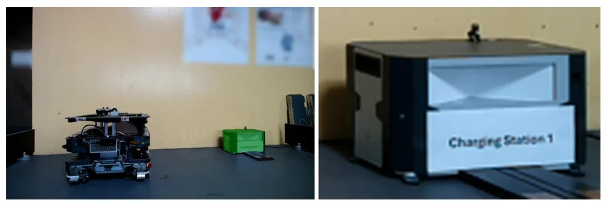
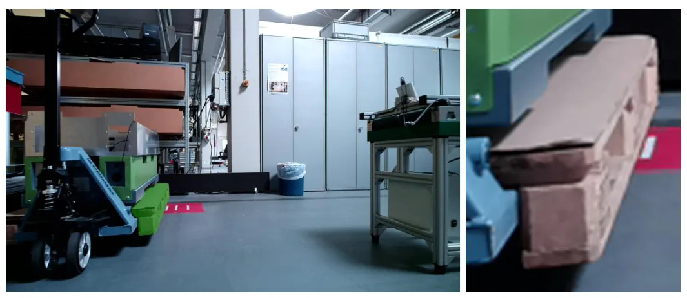
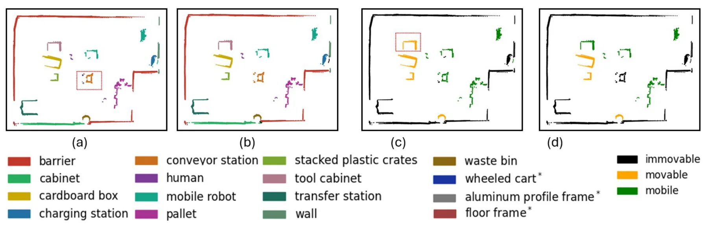
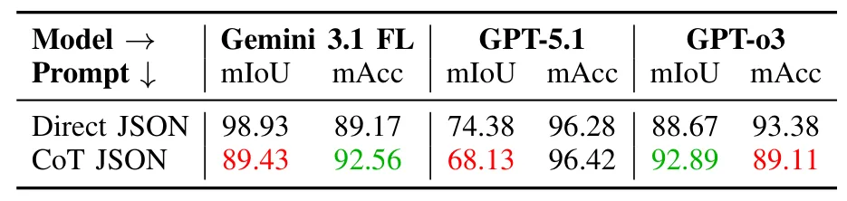
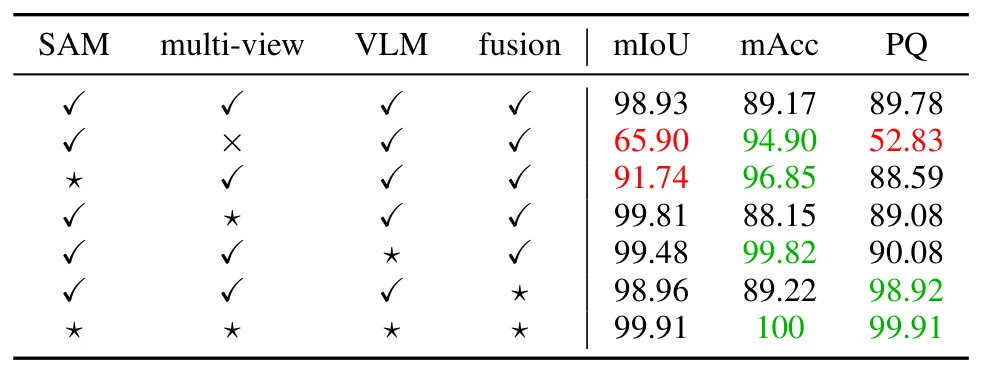

面向内部物流的 VLM 推理上下文语义地图Vision-Language Model Reasoning for Contextual Semantic Mapping in Intralogistics
适合关注仓储/内部物流机器人语义地图和动态环境导航的读者；工程 pipeline 清晰，但需复核 VLM 调用成本、prompt 稳定性和实例聚类误差传播。
一句话工作总结
在 SLAM 几何地图上叠加 SAM 分割、跨视角聚类和 VLM 推理，构建包含物体类别与可移动性属性的语义地图。
摘要
该工作针对内部物流环境中的移动机器人，提出结合 SLAM 几何地图、SAM 实例分割、实例聚类和 VLM 多视图推理的上下文语义地图 pipeline。系统在零样本、开放词汇设置下聚合多视角观测，让 VLM 推断物体类别及可移动性等上下文属性，而不需要任务特定训练或预定义类别。实验比较三种 VLM 和两种 prompt 策略，报告语义分类 98.93% mIoU、物体可移动性估计 89.17% mAcc；组件分析显示 VLM 推理是上下文理解瓶颈，实例聚类是 panoptic 性能主要限制。
Autonomous mobile robots operating in intralogistics environments rely on geometric maps for localization and navigation, but lack semantic understanding of objects and their contextual properties. We present a contextual semantic mapping pipeline that combines SLAM-based geometric mapping, SAM-based instance segmentation, instance clustering, and VLM multi-view reasoning to produce a contextual semantic map representation encoding geometric structure, object class, and object movability. By aggregating observations across multiple viewpoints and querying a VLM in a zero-shot, open-vocabulary setting, the pipeline infers contextual object properties--here demonstrated through movability--without requiring task-specific training or predefined object categories. We evaluate three VLMs under two prompting strategies and conduct a component-wise analysis of the pipeline. The proposed pipeline achieves 98.93 % mIoU for semantic classification and 89.17 % mAcc for object movability estimation. Component analysis identifies VLM reasoning as the primary bottleneck for contextual understanding and instance clustering as the main limitation for panoptic performance. The resulting semantic map supports context-aware filtering and robust navigation in dynamic intralogistics environments.
中文解读摘录
- 英文题名：Pocket-SLAM: Rendering-Area-Aware Pruning for Memory-Efficient 3DGS-SLAM
- 作者：Leshu Li, Jie Peng, Yang Zhao
- 类别/来源：cs.CV；comment: 2026 IEEE International Conference on Robotics and Automation (ICRA)；采集 score=17；阅读优先级=9.3/10。
- 一句话总结：用“对有效渲染区域的贡献”而不是单点 opacity/gradient 启发式来剪枝高斯，在保持定位/建图精度的同时显著降低 3DGS-SLAM 运行内存。
- 为什么值得看：这是今天最贴近 SLAM 主线的工作，直接面向大尺度/自动驾驶场景中 3DGS-SLAM 高斯点持续累积的问题；摘要报告 EuRoC/KITTI 上超过 60% 内存降低和 2 倍以上 FPS 提升，且给出了开源仓库地址。后续应复核其 pruning 触发策略、实时开销、对回环/长期地图维护的影响，以及和现有 keyframe/visibility 管理的关系。
- 标签：3DGS-SLAM、内存剪枝、实时建图、自动驾驶
- 链接：abs / PDF
图表/页面预览

{kind=link}

{kind=link}

{kind=link}

{kind=link}

{kind=link}
